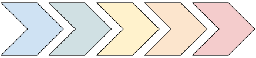
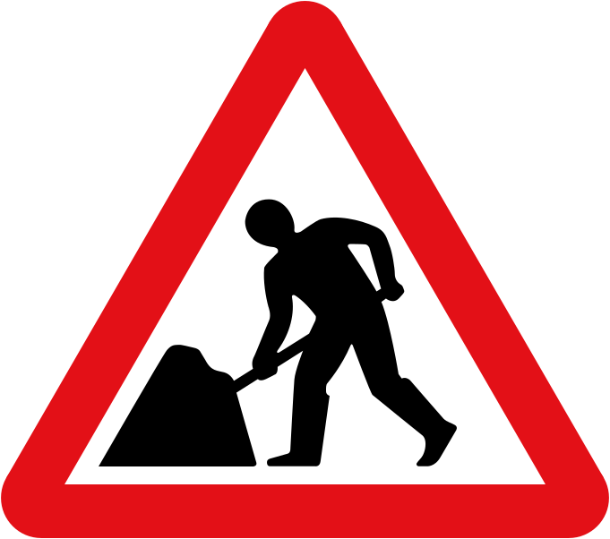

<!DOCTYPE html>
<html lang="en">
  <head>
    <meta charset="utf-8" />
    <meta name="viewport" content="width=device-width, initial-scale=1.0, maximum-scale=1.0, user-scalable=no" />

    <title></title>
    <link rel="stylesheet" href="dist/reveal.css" />
    <link rel="stylesheet" href="css/robot-lung.css" id="theme" />
    <link rel="stylesheet" href="plugin/highlight/zenburn.css" />
	<link rel="stylesheet" href="css/layout.css" />
	<link rel="stylesheet" href="plugin/customcontrols/style.css">


    <link rel="stylesheet" href="css/extra.css" />

    <script defer src="dist/fontawesome/all.min.js"></script>

	<script type="text/javascript">
		var forgetPop = true;
		function onPopState(event) {
			if(forgetPop){
				forgetPop = false;
			} else {
				parent.postMessage(event.target.location.href, "app://obsidian.md");
			}
        }
		window.onpopstate = onPopState;
		window.onmessage = event => {
			if(event.data == "reload"){
				window.document.location.reload();
			}
			forgetPop = true;
		}

		function fitElements(){
			const itemsToFit = document.getElementsByClassName('fitText');
			for (const item in itemsToFit) {
				if (Object.hasOwnProperty.call(itemsToFit, item)) {
					var element = itemsToFit[item];
					fitElement(element,1, 1000);
					element.classList.remove('fitText');
				}
			}
		}

		function fitElement(element, start, end){

			let size = (end + start) / 2;
			element.style.fontSize = `${size}px`;

			if(Math.abs(start - end) < 1){
				while(element.scrollHeight > element.offsetHeight){
					size--;
					element.style.fontSize = `${size}px`;
				}
				return;
			}

			if(element.scrollHeight > element.offsetHeight){
				fitElement(element, start, size);
			} else {
				fitElement(element, size, end);
			}		
		}


		document.onreadystatechange = () => {
			fitElements();
			if (document.readyState === 'complete') {
				if (window.location.href.indexOf("?export") != -1){
					parent.postMessage(event.target.location.href, "app://obsidian.md");
				}
				if (window.location.href.indexOf("print-pdf") != -1){
					let stateCheck = setInterval(() => {
						clearInterval(stateCheck);
						window.print();
					}, 250);
				}
			}
	};


        </script>
  </head>
  <body>
    <div class="reveal">
      <div class="slides"><section  data-markdown><script type="text/template"><!-- .slide: class="drop" data-background-image="images/ukaea_title.png" -->
<div class="" style="position: absolute; left: 0px; top: 0px; height: 1080px; width: 1920px; min-height: 1080px; display: flex; flex-direction: column; align-items: center; justify-content: center" absolute="true">


<div class="" style="padding: -10 0 0 0; box-sizing: border-box; position: absolute; left: 5%; top: 65%; height: 25%; width: 100%; display: flex; flex-direction: column; align-items: flex-start; justify-content: space-evenly" align="left">


## IMAS UDA Workshop
# UDA Roadmap
#### _<u>Jonathan Hollocombe</u>, Adam Parker, Stephen Dixon_ <br> November 22, 2023 &#8212; ITER

</div>
</div></script></section><section  data-markdown><script type="text/template"><!-- .slide: class="drop" data-background-image="images/ukaea_slide.png" -->
<div class="" style="position: absolute; left: 0px; top: 0px; height: 1080px; width: 1920px; min-height: 1080px; display: flex; flex-direction: column; align-items: center; justify-content: center" absolute="true">


## Quick recap


</div></script></section><section  data-markdown><script type="text/template"><!-- .slide: class="drop" data-background-image="images/ukaea_slide.png" -->
<div class="" style="position: absolute; left: 0px; top: 0px; height: 1080px; width: 1920px; min-height: 1080px; display: flex; flex-direction: column; align-items: center; justify-content: center" absolute="true">


## UDA roadmap

<div class="no-border" style="transform: rotate(90deg); position: absolute; left: 0%; top: 0%; height: 100%; width: 25%; display: flex; flex-direction: column; align-items: center; justify-content: center" >



</div>

- **Release 2.8.0**
	- Windows CI build
	- Unification with ITER CODAC UDA
- **Release 2.8.`$x$`**
	- Any updates and bugfixes required for outstanding issues
		- Issues with SSL authentication, etc.
- **Release 3.0**
	- Tidying up UDA header files
		- Only public API headers will be installed to avoid codes relying on implementation details
	- Making `IDAM_PLUGIN_INTERFACE` structure opaque
		- With more plugin helper functions
	- Rewritten C++ client
		- Should hopefully fix issues around multiple clients open in Python etc.
</div></script></section><section  data-markdown><script type="text/template"><!-- .slide: class="drop" data-background-image="images/ukaea_slide.png" -->
<div class="" style="position: absolute; left: 0px; top: 0px; height: 1080px; width: 1920px; min-height: 1080px; display: flex; flex-direction: column; align-items: center; justify-content: center" absolute="true">


## UDA roadmap (cont.)

<div class="no-border" style="opacity: 50%; position: absolute; left: 0%; top: 0%; height: 100%; width: 20%; display: flex; flex-direction: column; align-items: center; justify-content: center" >



</div>

- **Release TBD**
	- Moving from xinetd to systemd
	- Adding ability to run server outside of xinetd/systemd
	- Additional data access plugins in the core repo (MDS+, etc.)
	- Ongoing refactoring & modernisation efforts
	- Always more documentation!
- **Additional developments?**
	- Async/streaming data requests
	- Move from XDR serialisation to something else
	- Integration of AAI
</div></script></section><section  data-markdown><script type="text/template"><!-- .slide: class="drop" data-background-image="images/ukaea_slide.png" -->
<div class="" style="position: absolute; left: 0px; top: 0px; height: 1080px; width: 1920px; min-height: 1080px; display: flex; flex-direction: column; align-items: center; justify-content: center" absolute="true">


## IMAS UDA backend roadmap

<div class="no-border" style="transform: rotate(90deg); position: absolute; left: 0%; top: 0%; height: 100%; width: 25%; display: flex; flex-direction: column; align-items: center; justify-content: center" >


</div>

- **Release 5.0.1 (?)**
	- Release of changes in current develop branch of IMAS
	- Changes required to use UDA backend with mapped data
- **Release TBD**
	- Any performance changes identified in performance profiling
	- Integration testing of UDA backend with remote data and mapped data
	- Refactoring and code improvements
</div></script></section><section  data-markdown><script type="text/template"><!-- .slide: class="drop" data-background-image="images/ukaea_slide.png" -->
<div class="" style="position: absolute; left: 0px; top: 0px; height: 1080px; width: 1920px; min-height: 1080px; display: flex; flex-direction: column; align-items: center; justify-content: center" absolute="true">


## IMAS plugin roadmap

<div class="no-border" style="transform: rotate(90deg); position: absolute; left: 0%; top: 0%; height: 100%; width: 25%; display: flex; flex-direction: column; align-items: center; justify-content: center" >


</div>

- **Release 1.4.0**
	- Tagged release for changes and fixes from workshop preparation
- **Release 1.4.`$x$`**
	- Any changes & bugfixes required for outstanding issues
	- Updates from outcome of performance studies
		- Including handling of NaNs from mapped data
- **Release TBD**
</div></script></section><section  data-markdown><script type="text/template"><!-- .slide: class="drop" data-background-image="images/ukaea_slide.png" -->
<div class="" style="position: absolute; left: 0px; top: 0px; height: 1080px; width: 1920px; min-height: 1080px; display: flex; flex-direction: column; align-items: center; justify-content: center" absolute="true">


## JSON mapping roadmap

<div class="no-border" style="transform: rotate(90deg); position: absolute; left: 0%; top: 0%; height: 100%; width: 25%; display: flex; flex-direction: column; align-items: center; justify-content: center" >


</div>

- **Release v0.2.0-beta**
	- Bug fixes from the tutorial, 
		- including rework Exprtk integration, 
		- handling of more data types 
		- etc
	- Public release of the repository 
	  <br>(initially **v0.2.0-beta**), 
		- move to UKAEA organisation area on Github
		- cleanup, refactor, comment
- **Release TBD**	
	- Improved test suite and enable CI
	 - Add signal caching for substantial performance gains (S Dixon)
	 - Improve CMake structure, install protocol, and build transparency
	 - Remove hardcoded paths and reliance on environment variables
	   std::filesystem::path for io
	- Error handling and improve error message description
	- Documentation improvements
</div></script></section><section  data-markdown><script type="text/template"><!-- .slide: class="drop" data-background-image="images/ukaea_slide.png" -->
<div class="" style="position: absolute; left: 0px; top: 0px; height: 1080px; width: 1920px; min-height: 1080px; display: flex; flex-direction: column; align-items: center; justify-content: center" absolute="true">


## Mappings roadmap

<div class="no-border" style="transform: rotate(90deg); position: absolute; left: 0%; top: 0%; height: 100%; width: 25%; display: flex; flex-direction: column; align-items: center; justify-content: center" >


</div>

- **MAST-U Mapping Release TBD**
	- Bug fixes to existing mapping (and continued validation)
	- Finish mapping equilibrium IDS
	- Release validated current 'completed' IDSs and make available on UDA3
	- Map NBI, Summary, MSE, and Thomson Scattering IDSs
	- Improve CI for the repository
		- autogenerate documentation 
		- run tests for known mapping values
- **JET Mapping Release TBD**
	- Finalise Summary IDS mapping from CPF
		- (Including deploying from UDA server on the JDC)
	- Finish Magnetics mappings
		- (translate previous mappings to the JSON framework)
- **General Framework Release TBD**
	- Add more custom mapping features
	- Move to mapping DD 4.0.0 develop (ready for release)
	- Map, map, map, more IDSs, more machines (map team?)
</div></script></section><section  data-markdown><script type="text/template"><!-- .slide: class="drop" data-background-image="images/ukaea_slide.png" -->
<div class="" style="position: absolute; left: 0px; top: 0px; height: 1080px; width: 1920px; min-height: 1080px; display: flex; flex-direction: column; align-items: center; justify-content: center" absolute="true">


## Questions & Ideas?
</div></script></section></div>
    </div>

    <script src="dist/reveal.js"></script>

    <script src="plugin/markdown/markdown.js"></script>
    <script src="plugin/highlight/highlight.js"></script>
    <script src="plugin/zoom/zoom.js"></script>
    <script src="plugin/notes/notes.js"></script>
    <script src="plugin/math/math.js"></script>
	<script src="plugin/mermaid/mermaid.js"></script>
	<script src="plugin/chart/chart.min.js"></script>
	<script src="plugin/chart/plugin.js"></script>
	<script src="plugin/menu/menu.js"></script>
	<script src="plugin/customcontrols/plugin.js"></script>

    <script>
      function extend() {
        var target = {};
        for (var i = 0; i < arguments.length; i++) {
          var source = arguments[i];
          for (var key in source) {
            if (source.hasOwnProperty(key)) {
              target[key] = source[key];
            }
          }
        }
        return target;
      }

	  function isLight(color) {
		let hex = color.replace('#', '');

		// convert #fff => #ffffff
		if(hex.length == 3){
			hex = `${hex[0]}${hex[0]}${hex[1]}${hex[1]}${hex[2]}${hex[2]}`;
		}

		const c_r = parseInt(hex.substr(0, 2), 16);
		const c_g = parseInt(hex.substr(2, 2), 16);
		const c_b = parseInt(hex.substr(4, 2), 16);
		const brightness = ((c_r * 299) + (c_g * 587) + (c_b * 114)) / 1000;
		return brightness > 155;
	}

	var bgColor = getComputedStyle(document.documentElement).getPropertyValue('--r-background-color').trim();
	var isLight = isLight(bgColor);

	if(isLight){
		document.body.classList.add('has-light-background');
	} else {
		document.body.classList.add('has-dark-background');
	}

      // default options to init reveal.js
      var defaultOptions = {
        controls: true,
        progress: true,
        history: true,
        center: true,
        transition: 'default', // none/fade/slide/convex/concave/zoom
        plugins: [
          RevealMarkdown,
          RevealHighlight,
          RevealZoom,
          RevealNotes,
          RevealMath.MathJax3,
		  RevealMermaid,
		  RevealChart,
		  RevealCustomControls,
		  RevealMenu,
        ],


    	allottedTime: 120 * 1000,

		mathjax3: {
			mathjax: 'plugin/math/mathjax/tex-mml-chtml.js',
		},
		markdown: {
		  gfm: true,
		  mangle: true,
		  pedantic: false,
		  smartLists: false,
		  smartypants: false,
		},

		mermaid: {
			theme: isLight ? 'default' : 'dark',
		},

		customcontrols: {
			controls: [
			]
		},
		menu: {
			loadIcons: false
		}
      };

      // options from URL query string
      var queryOptions = Reveal().getQueryHash() || {};

      var options = extend(defaultOptions, {"width":"1920","height":"1080","margin":0.04,"maxScale":"4","controls":true,"progress":true,"slideNumber":true,"transition":"none","transitionSpeed":"default"}, queryOptions);
    </script>

    <script>
      Reveal.initialize(options);
    </script>
  </body>

  <!-- created with Advanced Slides -->
</html>
